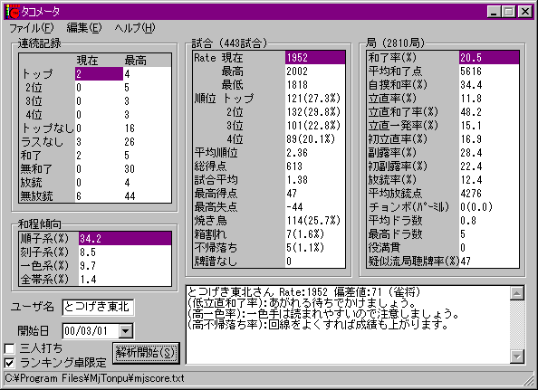
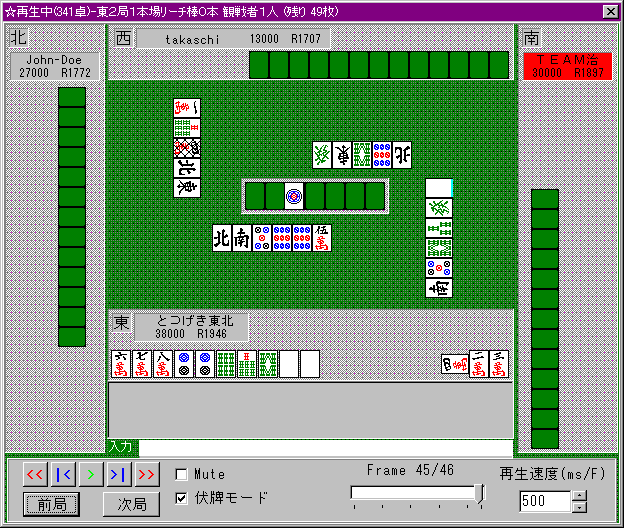
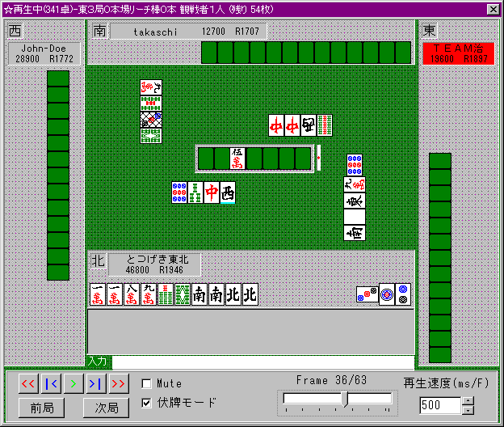
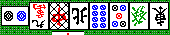

上ランで勝とう！
2000/4/11 とつげき東北
上ランで勝とう：
とつの経験を元に、「第一東風荘の上級ランキング卓（上ラン）」で勝つ打ち方の覚え書きを記しておこう(ﾉ´▽`)ﾉ
ＨＰにある「麻雀講座」は、基本的に「第一東風荘ワイワイ卓」対応の打ち方で、これだけでは上ランで勝ちきれないと思う。
ちなみにとつの体験では、「麻雀講座」通りにやって、安定Ｒが１８５０前後（１８００～１９００を行ったりきたりする水準）だった。
3/22から打ち方を大幅に変更して以来の成績では、安定Ｒが１９５０前後になった。
打ち方変更前 2/15～3/21 408試合 平均順位2.439位 安定Ｒ1840
最近の｢実力｣ 3/22～
443試合 平均順位2.357位 安定Ｒ1940
どうです？(笑) 成長してるでしょう(⌒∇⌒)ﾉ"
よく相談されるのが、「初級→中級は簡単になれたけど、中級→上級になれない」というやつです。
安定Ｒが１８００前後（いつ見てもだいたい１７５０～１８５０くらいにあるような人）でうろうろしてる人のパターンです。
ここでは！ 「とつ流」を直伝いたしましょう（
´ｰ`）y─┛~~
いくつかの重要なポイント：

１）振らないこと！
これは基本です。上ランでは相手のテンパイが早く、降りていると全然上がれない感じもしますが、振るよりマシです。
焼き鳥率、放銃率、和了率に注目して下さい。
和了率たった２０％ちょっと、２６％（４試合に１試合）も焼き鳥です。時には４試合連続あがれず、なんてこともあります。
でもその分、振り込みが少ないですね（上ランではダマに振ったりすることも多いので、１２．５％なら少ない方でしょう）。
（特に3/22以降だけなら 振り込み率は１１．５％まで下がっています）
何度も言ってきたことで、今さらなんですが、「振らない麻雀」、とにかくまずこれを心がけます。
２）手の高さを比較して攻める！
自分の手と相手の手の大きさを比較して、「これなら危険を冒してでも攻めた方が良い」と判断できる場合にのみ攻めます。
平均和了点、平均放銃点に注目して下さい。
ただでさえ「守備の麻雀」をやるわけですから、攻める機会があれば大きな手で上がっておきたいものです。
ハイパイから大きな手を構想するよう心がけます。手なりでメンピンのみになるような進め方はしないこと！
ピンフのみでテンパイしてリーチをかけるということは、自分の手が２０００～３９００なのに放銃の危険を抱え込むということです。
２０００～３９００という点数は、相手の手が安いとわかっていない段階では、ダマで勝負する点数です。
ドラが３枚も切れ、染め手などもないようなら、ピンフでリーチも(
≧∇≦)ｂ です。
手を高くするには、ドラがあるならヤクハイドラドラとかメンピンドラ１、タンヤオドラドラなどを目指せば良いです。
またヤクハイホンイツドラとかも充分視野に入れて下さい。
ドラがない場合でホンイツなどもできない場合は、ヤクハイをアンコにするとか、ドラ引きを考えて手を進めます。
最終的に愚形でテンパイしたりしますが、そういった場合は当然ダマにします。
３）上がり急がないこと！
上ランにいくと、周りはみな東１からヤクハイのみなんかを上がっていますね。
でも、東１から１０００点とか２０００点に焦点を合わせて打っていくようなことはしてはいけません。
ヤクハイをポンしたところでリーチがかけられたら困りますね。１０００点のために危険を冒すというのは最悪です。
ヤクハイのみにしかならない手ならヤクハイは鳴かないこと（ただし、オーラス間際で局を流すことが重要な局面ではこの限りではありません）。
ドラが１つでもあれば少し事情が変わってきます。特にドラがオタ風であったりトイツ以上である場合です。
ドラがオタ風なら、リーチされてもさほど高くない（メンピン裏１とか）場合が多く、しかも食い仕掛けならオタ風のドラを生かせます（例えばドラ単騎にすれば、相手はドラを使いにくく、かと言ってドラを切れば３９００～５２００をあがれるわけです）。
ヤクハイドラ１を狙うのは子である限り感心しませんが、早い順目にリャンメンでテンパイできそうなら、ドラかぶりした場合にも対応できるような形で攻める場合もあります。
４）むやみにリーチをかけないこと！
初リーチ率がたったの１６．９％です。
４人のうち、初めにリーチする確率は普通に考えれば２５％程度のはずですが、とにかくリーチが少ないです。
「振らないこと」「手の高さを比較して攻める」を守る以上、どうしてもリーチがかけられないテンパイ、というのが多々あるのです。
上ランではリーチ和了率がどうしても５０％程度になります。
１０００点を出し、無防備になり、その上相手に警戒させるわけですから、相応の事情がない限りリーチはしないようにします。
１０順目を超えた段階で、ドラが場に１枚も見えていないのにピンフのみからリーチ、というのは最悪です。
一方、自分がドラを２つ持っているなら、ある程度安心してリーチして良いと思います。
例えば早い順目でピンフをテンパイした時、それまで抱えていたドラを切るとしましょう。この時「ポン」のラグがかからなければ、次順にリーチするのも悪くありません。
とにかく、「自分から見えているドラの数」を意識して、相手の手の高さに見合ったリーチがかけられるようになりましょう。
例えばとつの場合、東１や東２ではだいたい次のようにリーチかダマかを分けています。
・リーチする場合の典型例
リーチすると２６００または３９００になり、リャンメン以上の場合
リーチすると５２００になる場合
３面待ちの場合
ヤクハイシャンポンなど、比較的上がりやすい形
・リーチしない場合の典型例
５２００点以上の場合
ドラを引けば手がわりする形
ドラが場に見えていない場合の中順以降（ドラをつかんだら切らなければいけないようなテンパイ形であればなおさら）
誰かがドラを捨てたら「ポン」のラグがかかった局で待ちの形が充分でないとき
東１にやむを得ずピンフのみなどを上がることは多々あります（高い手を目指せ、と書きましたが、結果的に１０００点の上がりになるのは仕方ありません。堂々と上がってやって下さいm（＿ ＿）m）。
リーチをむやみにかけるな！ ということは、「出上がりできるテンパイを目指す」ことでもあります。
リーチをかけると警戒させてしまいますから、メンタンピンよりヤクハイドラドラの方が有効ということです。
その意味で、ヤクハイはある程度残す必要があるでしょう。
ヤクハイがトイツなのにヤクハイのみしか目指せない、場合でも、他のヤクハイやホンイツをしっかり見据えて打牌します。
５）追っかけリーチはなるべくしない！
よくあるのが「どうせ降りる気ないから追っかけリーチ」という感じのリーチ。
東３や東４で、点数的にしょうがないとか、自分がドラ２リャンメン待ちテンパイで役無し、など特殊な場合を除けば、追っかけリーチはあまり推奨しません。
以下のような理由です。
・２家リーチがかかると自分が振る可能性が高くなる
というのも、さすがに２家リーチとなると他の２人も降りることが多いからです。
自分vs先制リーチ者の１対１対決になる場合が多く、従ってロンされる可能性が増加するように思います。
相手が高い手なら大変ですし、安い手なら無理に自分がリーチする必要もありません。
・１０００点余分に払う
相手の手が３９００でも、４９００の上がりになってしまいます。次の局で同じ手を作っても同じ順位になれません。
さらに次の局で誰かが３９００を上がったら・・・もう３位です（ﾉ＿･､）
ダマで対抗すれば、３９００振っても、３９００上がれば２位に戻れますね。
逆にダマで上がればリーチ棒分も収入になり、同じ手のダマを上がられても自分はまだ１位なんですヽ(´▽｀)/
また、「ドラで放銃しないかどうか」ということと、「当たり牌がリーチ者のアンパイに見えるか」の２点は重要です。
ドラをつかんだら手放さなければならないテンパイ形での追っかけは特に危険なわけです。
リーチ宣言牌が待ち牌になった場合などは、ダマにするとかなり上がりやすいですよ。
ある程度ドラが見えており、ダマにしていても大して上がれる確率が高くならない場合などは追っかけもあり得ますが。。
例えばドラが上がり牌になるような待ち、ならば、どうせダマでも他２家からは上がりづらいし、ドラをつかんでの振り込みはあり得ないので、追っかけの最善形の一つだと考えます。
ただしこれもダマで２０００→リーチで３９００になるような場合くらいでしょうか。
ダマで３９００＋リー棒１０００ の上がりならリーチをかけなくても充分ですし、それ以下なら無理はしたくありません。
もちろん、ダマで張っていて危険牌を引いて、勝負するならリーチしますよ。
６）ムダに浮き牌や危険牌を残さないこと！
１０順目を過ぎると、もう「危険」です。
この頃には大体のメンツ場所を整理し、危険牌を切らないよう工夫しなければいけません。
自分の手が高く、勝負するに値するなら少々危険を冒してでも広くテンパイを目指すことが重要ですが、ピンフドラ１程度にしかならない手なら、浮き牌なんかは早く切ってしまいましょう。
２４ ７ は整理して、 ２２４ にしておくということです。
また、ドラが入らなければ安い、という手なら、ドラソバの浮き牌だけを残し、「そこにメンツを作れなければ降り」で良いでしょう。
ある程度トイツがあった方が、相手の攻めに対しても回ったり降りたりしやすいです。
４つのメンツの位置を早めに決め、それ以外はさっさと捨ててしまう、のが振らないポイントだと思っています。
７）ロン牌になる前に切れ！
だれかが染め手をしていたりする場合。だれかがヤクハイをポンしてドラが見えていない場合。
自分はなんとかタンピンドラ１のいい形・・・というとき。
最後まで危険牌を持って、テンパイしてから勝負する人もいますが、リャンメン・リャンメンの好形２シャンテンを迎えたあたりで、早めに危険牌を処理することをお勧めします（相手が１鳴きのうちにです）。
もしドラがポンされたり、染め手にヤクハイヤクハイが確定したなら、そこから降ります。
染め手に対して、自分だけが絞って手を遅らせるというのは非常に不利です。
他家がポンポンさせたあげく、たった１枚の自分の勝負牌が当たり、では話になりません(笑)。
もちろん、自分がテンパイに遠いのに相手の手を進めさせるのはダメですよ。
１０順目以降の打ち方もこういった感じです。
・自分の手がテンパイしそうにない → 危険牌は出さず、降り
・まだそれほど危険がない → 早めに危険牌候補を切る
・既に危険だが自分の手も良い → できるだけアンパイを切り、最後に勝負
よくある状況だと、例えば次のようです。
下家のホンイツに対して。
自分の手は普通のタンピン → 牌をしっかり押さえつつ打つ
タンヤオドラドラに変化。下家はまだヤクハイポンして他色のトイツ落とし → 今のうちに危険牌候補をばんばん捨てる
自分は１シャンテン。下家は２鳴きになったが他色を手出し → 迷うところだが とつは危険牌があれば完全処理します
自分は１シャンテン。下家は染め色を手出し → 自分がテンパイした瞬間に勝負。危険牌を２枚もつもったら降り
もちろん、ドラが字牌で１枚も見えていないようなら勝負しませんよ(
≧∇≦)ﾌﾞﾊﾊﾊ!
８）局を流す技術を身に付けよう！
「単純に上がるのが早い」技術は、平均順位を上げるために極めて重要だと思います。
振らないためには無茶なリーチをかけられないので、２位と３９００とかの差のトップで東３を迎える、というようなことは多いです。
そういう時、いかに早く局を流せるか、というのはものすごく重要になってきます。
ヤクハイのみ、ピンフのみ、タンヤオのみ、を最も効率的に作る技術を磨いて下さい。
特に重要なのは「後付け」です。
ヤクハイドラドラを作る場合にも有効ですが、とにかく「ヤクハイを使って上がるべき」状況では、後付けを多用すべきです。
ヤクハイを先にポンすると、リーチがかかった場合にけっこう困るものです。後付け用のトイツがあればかなり安全になります。
後付けのポイントは
・他３メンツのうち２メンツがある程度の形である場合にのみチーやポンをする
ことでしょう。
例えば ２３ ６６８ １３ とある状態から ２３ の部分を先にチーするのはダメです。
一方、１３ ７９９ ６７ から １３ 部分をチーするのは良いと思います。
そして、よほど上がりを急ぐ場合でなければ、テンパイにならない段階で２つも３つもチーしてしまってはいけません。
愚形部分だけうまく処理し、あとはいつでも降りられるよう心がけながら（ヤクハイドラ３とかならともかく）、最終的にできればリャンメンかまたはヤクハイ片上がりのシャンポンに受けます。
１鳴きの段階で、片上がりシャンポンに仕上がれば完璧です。いつでも降りられるし、１鳴きからいきなりロンとは思われにくいからです。

↑相当上級の人でもこの白は止められません（#´Д`） 止めたらまずノーテンです(笑)
片上がりで上がれない方をツモっても、ヤクハイをポンすれば別の頭待ちにできますからそれほど心配はいりません。
また、初めのうちは「持ち持ち」が怖いと感じるかもしれませんが、特定の牌が持ち持ちになることは極めてまれです。
単純に言っても３家のうち１家が、残り２枚をたまたま持っている確率は９分の１程度です。
「後付け」に限らず、ピンフなど出上がりの効くテンパイ形を作れることはとても重要です。
イーペーコーやチートイ、喰い三色なども含め、役の構想を立てれるようにしましょう。

↑早く上がって流したい局面なので、北のみであがることにした。南と北はハイパイからトイツ。
もちろん南はアンパイ候補になるので（チャンタに近づくのを無視して！）見送り、愚形部分を先にチーした。
親リーがかかったけど、この形なら余裕で降りられる。
おまけ（安定Ｒを上げるために必要な要素）：
１）変に深読みしないように！
麻雀は「読み合い」のゲームではないと思います。
仮に読み合いだとしても、テンパイからシャンポンに受けたかカンチャンに受けたか、というレベルのことは判断できません。
それは「読む側」にとってはほとんど運のみです。
少なくとも第一東風荘の上級ランキング卓でそこそこのＲ（例えば１９００以上）を維持するに当たって、「読みを身に付ける」より「眠くない時に打つ」ことの方がよっぽど大切です(笑)。

ドラは南。東１の南家のリーチ！ 当たり牌を読んでみよう。・・・わかるかい！(爆)
早い５ピン落としと、リーチ宣言牌が２ピンということから、１－４ピンは危険？ じゃあ４７ピンは安全なの？ ちゅうか、ソーズは？ 裏スジの５－８マンは？
このリーチの当たり牌は、白と３ピンのシャンポンでした。
言えることは、「もしヤクハイやドラで振り込んだら点数が高いこと」、「もし無スジで振り込んだらピンフがつき得ること」「もし２～８牌で振り込んだらタンヤオがつき得ること」くらいなもんです。現物 → ヤクハイやドラを除く字牌 → スジ・・・ の順に切っていくまでです。
２）集中して打ち、熱くならない！
常に集中しましょう。周りがサクサク麻雀でも、重要な場面では１０秒間しっかり考えましょう。
「サクサク切れ」と言われたら「急ぎすぎるとＲが上がらないから」とさらっと答えます（自分のＲが相手より高くないと無意味です 爆）。
とつは、直前に打った数試合の当たり牌とか振り込み牌、誤打してしまった牌など、ある程度重要な状況と牌を覚えています(
≧∇≦)ﾌﾞﾊﾊﾊ!
別に覚えようと思っているわけではないんですが、自然と覚えてしまってます(笑)。集中するとはそういうことです。
そして熱くならない！ ずっと前からテンパイしているのに上がれず、他家からリーチがかかった時。反射的に追っかけリーチをするような人は ど・へ・た♪(爆)
３）Ｒが 下がっても/上がっても 打ち続けよう！
「安定Ｒ」という言い方は、そのまま「実力」ということです。
最近３５０戦くらいの平均順位を算出し、安定Ｒ＝４７７０－（350戦程度の平均順位）×１２００ で求めたもののことを指します。
決して、試合数最多キャラの現在Ｒのことでも、「好調」の時に時々到達できる高いＲのことでも、複数キャラがたまたま同じくらいになっているＲのことでもありません。
だから今のＲがどんなに低くても、打ち方を変えて３５０試合打って「実力Ｒ２０００」とわかったなら、堂々と「安定Ｒ２０００」と言っていいし、逆なら今のみかけのＲの高さに安住しているわけにはいかないです。
とにかく、見かけのＲが上がったから喜んで打つのを控えたり（実力が未だそのＲに見合わない、と自分でうすうす気付いている証拠です）、たまたま負けが続いたからと怖がって打つのをやめたり（前回まで「ついていなかった」からといって、次も・・・と考えるのが「流れ」の信仰です）するのはダメです。
どんどん打って、実力をつけよう。
実力がつけば、たまたま負けてＲが下がっても全然気にならなくなります。打っていればそのうち回復するとわかっているからです。
むしろ打てば打つほどＲが上がるので、どんどん打つ気になります。
自分の「実力」がＲ１９５０と言える人は、決してＲ１９５０ギリギリでやめたりしません(笑)。
ちなみに、「実力」がＲ１９５０なら、ついていればたまには２０００に行くでしょう。時には１８００台まで落ちるでしょう(#´Д`)。
１００試合やそこらでは、成績はどんどん変わります。いちいち１０戦程度の「不調」にビクビクしないように(笑)。
理論で全て解決するほどには、麻雀は未だ研究されていません。
だから「経験」もやはり必要です。
打ちまくりましょうヽ(´▽｀)/ 強くなるコツだと思います